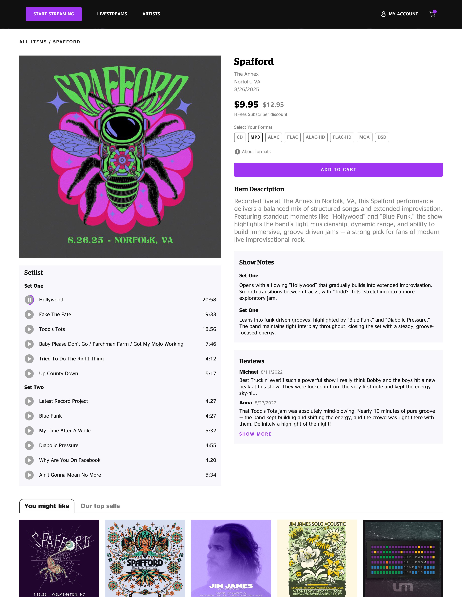
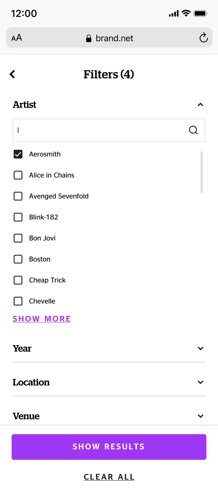
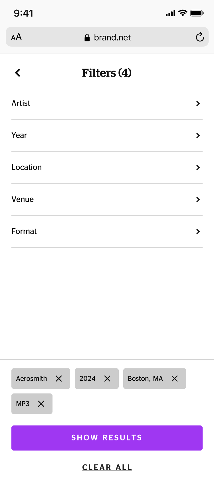
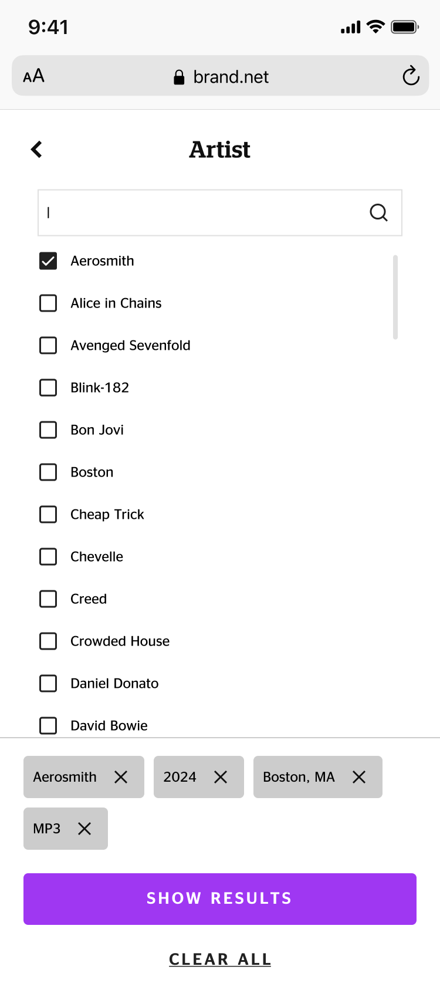

Overview
Designed a storefront for live concert recordings — from wireframes to production-ready in 3 weeks.
The catalog is large and growing. Users filter by artist, year, location, venue, and format — often all at once. The system needs to handle this depth today and scale tomorrow.
Top-bar dropdowns

Left sidebar
 Chosen direction
Chosen direction
Users choose between shows based on setlist and emotional connection — not technical specs. Navigating to a separate page per show breaks the browsing rhythm and reduces the chance of an impulse purchase.
Quick view side panel
 Chosen direction
Chosen direction
Dedicated product page

On mobile, the catalog requires the same filtering depth as on desktop. The challenge: how to present this complexity on a small screen without losing usability.
Stacked accordion

Drill-in navigation

